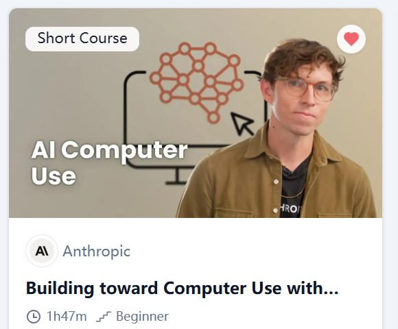

Learning Record 03
Building toward Computer Use with Anthropic

网站：Building toward Computer Use with Anthropic - DeepLearning.AI
学习背景/动机
本来是打算钻研LangGraph，先看掉LangGraph的几门网课的，但是今天刚开始开始看的那个课太基础了，感觉没什么意思，虽然它确实有些topic是我不熟悉的（其实我对于整个框架也是刚刚入门，所以也谈不上什么熟悉，但是课程确实不是很吸引人）。
然后准备找其他课上，但是偶然发现这门课，听了一下Introduction，感觉确实挺吸引人，而且有code example，于是开始学习。
虽然最后发现其实也没有像开始说的那样最后手把手做出一个可以操控电脑的Agent，而更多的是提供基础脚手架，把很多实现的关键元素讲了讲，比如多模态输入（这个确实帮助我更好地理解了什么叫支持多模态，比如Claude 3.5 haiku就不支持，而且具体比如图片信息是怎么装成可以放进message列表然后传给LLM也是很具有启发性的）
收获
1.了解了很多基础知识：（不能说懂了，只能说获得了很多启发性的认识）
比如 Anthropic 的API格式 vs OpenAI 的区别
对于直接搭建工作流不使用LangGraph，可以通过stop_reason == "tool_use"来路由到相应实现，进而完成组织
2.对于Prompt的编写有了更深的理解：教程中通过Real World Prompt(本质还是fake的)的撰写，展示了很多技巧与要点，比如prompt template，CoT ，n-shot ，XML等等，提供了一个更为系统的认知。
3.关于prompt caching，这个一直听说过但都没有具体了解过的概念，教程中进行了使用，这个概念不是很好懂，但在LLM支持下还是可以理解的
关于课程名字：教程最后展示了实际使用，在Anthropic的官方仓库有QuickStart，也有相应代码，如果感兴趣可以去看，然后在自己本地跑，不过需要Anthropic的API，如果想单纯了解Agent的搭建，tool的实现等也确实可以去看
一个值得深入的方向：看一下Computer_Use Agent它们是怎么搭建的（源码）